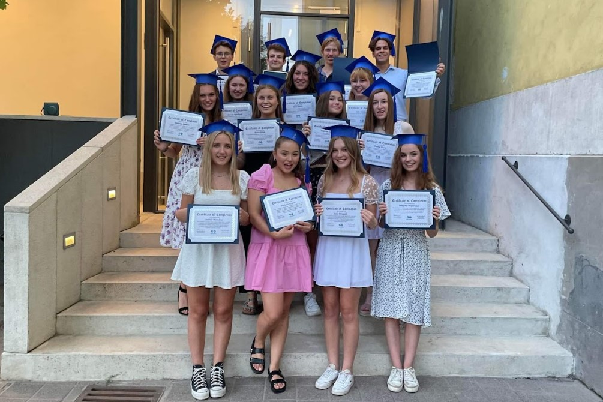
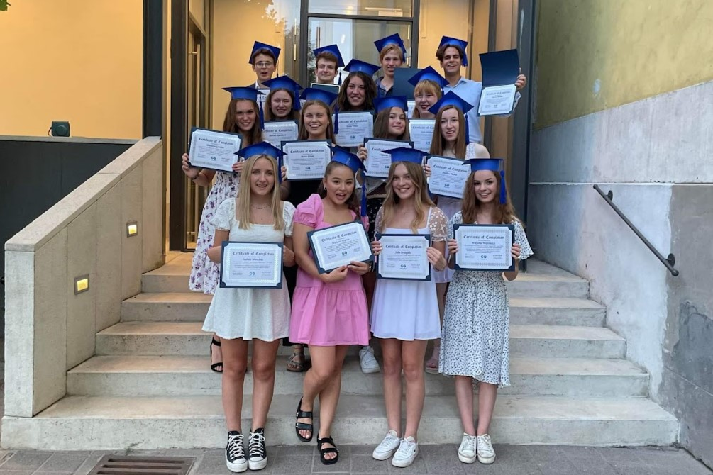
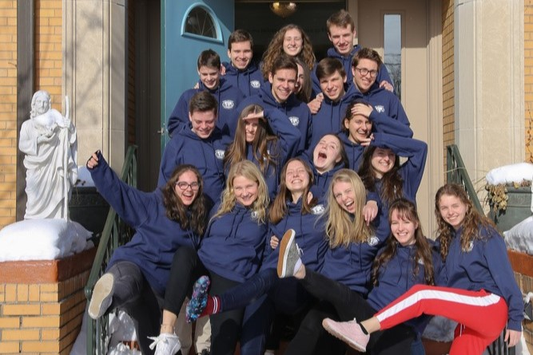
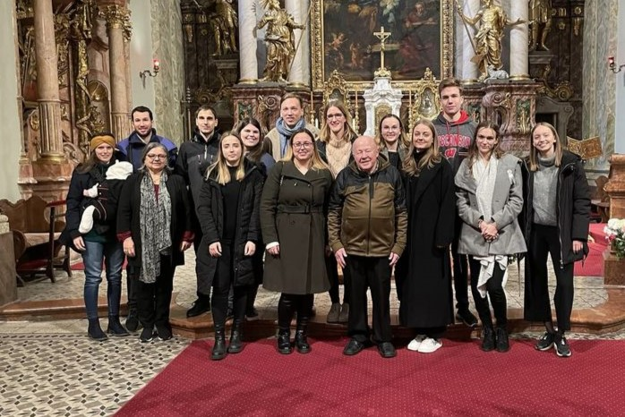
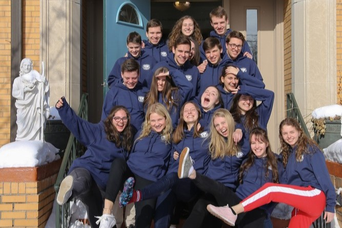
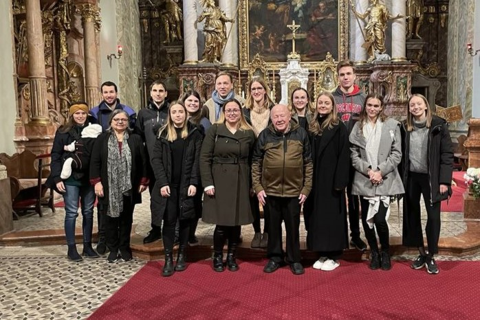

 



Történet
A Global Outreach története 1991-ben kezdődött, amikor Father Mike Carroll először látogatott Csehországba.
A Global Outreach Program az Egyesült Államokban született az 1990-es évek elején. Az alapítók, Fr. Mike Carroll katolikus pap és Mary Piette programigazgató azt tűzték ki célul, hogy a rendszerváltást követően segítsék a közép-kelet európai, volt szocialista országok katolikus egyházainak újboli megerősödését.
Ezt azzal valósítják meg, hogy katolikus fiataloknak egyéves tanulmányi lehetőséget biztosítottak, amelynek keretében a sikeres pályázók egy amerikai katolikus középiskolába járhatnak, és a tanévre egy katolikus család az otthonába fogadja őket.
A fiatalok a kint eltöltött tanév alatt nemcsak az angol nyelvet sajátítják el anyanyelvi szinten, de megismerhetik az amerikai katolikus egyház és számos ottani közösség működését is, hogy hazatérve ezeket a tapasztalatokat saját otthonuk, iskolájuk és plébániájuk építésére használhassák fel. A program révén 1991 óta több mint 400 magyar, szlovák, cseh, litván és lett diák tanulhatott egy évig Wisconsin, Minnesota és Nebraska államok városaiban.
Az utóbbi években, noha a program eredetileg kitűzött fő célja változatlan maradt, az alapítók újabb törekvéseket is megfogalmaztak. A program fő profilja továbbra is az egyéves amerikai tanulmányi lehetőségnek biztosítása maradt, azonban mivel egy-egy iskolába több különböző nemzetiségű Global Outreach diák kerül, a közös élmények és barátságok révén egyre szorosabb szálakkal kötődnek egymáshoz a szlovák, cseh, litván, lett, lengyel és magyar fiatalok, ami a résztvevő európai országok integrációs törekvéseinek fontos mérföldköve, hiszen az új generációk egymás felé nyitása évszázados sebek gyógyulását eredményezheti.
A Global Outreach Program nem csupán egy nyelvtanulási lehetőség, hanem célja, hogy a fiatalokban kiérlelje a bennük rejtő értékeket is. A nemes célok elérésének lehetőségét a program az úgy nevezett „szolgálva vezetés” („servant leadership”) megtanulásában látja. A Global Outreach Program hatékonyságát mutatja, hogy a hazatérő magyar diákok közül sokan vállalnak valamilyen vezetői munkát, például katolikus kis-közösségekben.
Az amerikai programnak Európában sehol nem volt bázisa, csupán személyes kapcsolatokon keresztül terjedt a lehetőség híre. 1997-től kezdve Tomcsányi András és családja, később pedig Tomcsányi Miklós vette át a magyarországi félhivatalos képviselet irányítását. A XXI. század hajnalán elsősorban az érdektelenségből kifolyólag folyamatosan csökkent a magyar jelentkezők száma és ezzel együtt az érdeklődőknek a program szempontjából sarkalatos kvalitása is. 2004 őszén jött el az a pillanat, amikor az öregdiákok gyökeres struktrúra váltással létrehozták a Global Outreach Magyarország Alapítványt, aminek elsődleges céljaként a tanulmányi lehetőség közvetítését tűzték ki.
Már az első évben megduplázódott az Amerikába kiutazó magyarok száma, a korábbi három helyett hét fiatal indult az Újvilágba tanulni. A sikeres kezdeten felbuzdulva további tevékenységek sorát vázolta fel a Kuratórium: inter-európai cserediák program, vezető- és utánpótlás képzés, konferencia angol tanárok részére, servant leadership training stb.
Ma az Alapítvány közvetlenül működik közre a magyar Global Outreach diákok amerikai tanulásában, továbbá az öregdiákok számára szervez programokat, készíti elő a jövő évi jelentkezéseket, valamint a négy évente hazánkban megrendezésre kerülő nyári tábort. Folyamatos fejlődés és új perspektívák megnyitása jellemzi munkánkat, amit bár minden anyagi ellenszolgáltatás nélkül, önkéntes alapon végzünk, mégis hatalmas erővel tölt el bennünket.
Az amerikai program igazgatói székét a 17 év munka után nyugdíjba vonult Mary Piette-től 2008 nyarán Barbara Tota-Boryczka vette át, aki lelkes támogatója az eddigi tevékenységnek.
Az amerikai program weboldala innen érhető el.
Amenyiben programunk felkeltette érdeklődését illetve elnyerte tetszését, vegye fel velünk a kapcsolatot, örömmel állunk rendelkezésére! Működésünkhöz és munkánkhoz mindenfajta támogatást hálásan elfogadunk és köszönünk.
Misszió
A Global Outreach elkötelezett az úgymond „szeretet civilizációjának” („civilization of love”) építésében Közép- és Kelet-Európában, valamint az Egyesült Államokban, fiatal, dinamikus katolikus szolgáló vezetők képzésén keresztül, akik elkötelezettek az egyház és a társadalom újjáépítése iránt.
Vízió
A Global Outreach az Egyesült Államok és Közép-/Kelet-Európa középiskolái és más egyházi szervezetek közötti katolikus cserediákprogram révén éri el küldetését. A kulturális megosztás és a személyes növekedés értékein túl a Global Outreach arra ösztönzi a diákokat, hogy növekedjenek keresztény hitükben és szolgálatkész vezetői képességeikben, a szeretet civilizációjának építése iránti elkötelezettséggel. A program támogatja a diákokat abban, hogy személyiségként növekedjenek, egészségesebbé, bölcsebbé, szabadabbá, önállóbbá váljanak, és nagyobb eséllyel váljanak szolgálókká, különösen azok számára, akik a társadalomban a legkevésbé kiváltságosak.